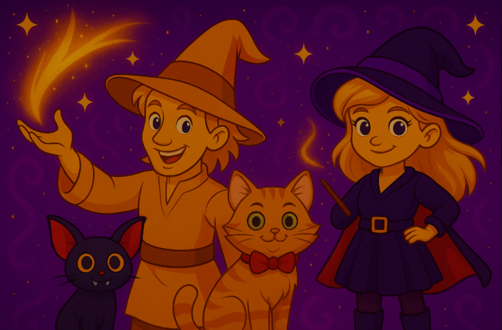
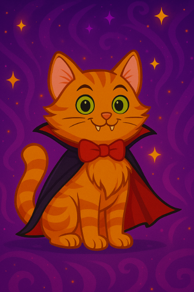
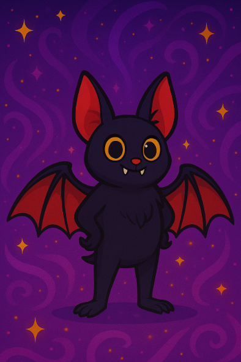
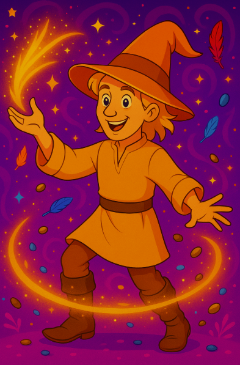
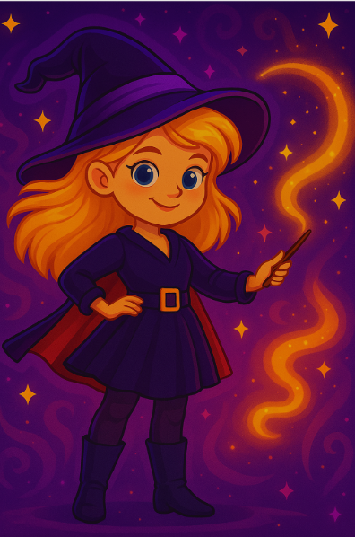

Our Story
Welcome to a realm where magic swirls in the trees, the moon whispers secrets, and the bravest hero of all... is a cat. Mouse's Enchanted Adventures is more than just a story — it's an immersive fantasy world brought to life by author Katherine McNeil. Born from the heart of imagination and stitched with spells of storytelling, this whimsical tale follows a vampire tabby cat named Mouse as he navigates danger, friendship, and mystery in a realm forgotten by time. The world expands with Katherina and her son Devlin, spellcasters whose fates intertwine with Mouse’s own.

The Enchanted World
Set in the 1800s, Mouse’s world is steeped in history and mysticism. Forests shimmer with ancient magic, hidden portals lead to parallel realms, and mystical beings linger in the twilight. This is a world where spells are spoken in hushed tones, and every rustling leaf might be a message from beyond.

Mouse the Vampire Cat
More than fur and fangs, Mouse is a legacy wrapped in tabby stripes. Behind his oversized green eyes and polished red bowtie lies the soul of a hero. Born into mystery, raised by moonlight, and marked by destiny, Mouse faces danger with a sharp wit and even sharper claws. Whether leaping into battle or curling up by a potion cauldron, he’s always five steps ahead, both cunning and kind — and determined to protect the magical balance of his world.

Bat, the Loyal Familiar
Bat is the shadow that follows, the spark that flutters just out of reach. Red-winged and full of attitude, he’s not just Mouse’s familiar — he’s his conscience, his comic relief, and his emergency escape plan all rolled into one. With echolocation sharper than gossip at the village tavern, Bat always knows what’s coming. Whether perched on a branch or soaring across stars, he’s the perfect companion in mischief and magic alike.

Devlin, the Young Warlock
He’s the wild spark to Katherina’s calm flame. Devlin is mischievous, clever, and occasionally blows up things unintentionally (like pumpkins or time). He’s growing into his powers, with a spellbook in one hand and a bucket of curiosity in the other. But don’t let the youth fool you — he’s brave, fiercely loyal to Mouse, and slowly discovering he may be the key to unlocking ancient magic that has long been dormant.

Katherina, the Enchanted Witch
Elegant, enigmatic, and equipped with an endless supply of knowledge (and tea), Katherina is the pillar holding up Mouse’s enchanted world. Her calm demeanor hides a past filled with enchanted trials and powerful secrets. As Devlin’s mother, she teaches with compassion and protects with strength. And as Mouse’s ally, she bridges the world of spells and stories. Katherina is not just part of the legend — she writes it with every wand wave and whispered incantation.
The Creator
Katherine McNeil is a writer, creator, and imaginative force behind the Mouse universe. With a passion for storytelling and a flair for fantasy, she’s brought Mouse and his world to life — one magical page at a time.
Katherine believes every story holds power — and through Mouse, she invites readers of all ages to embrace the unknown, trust their instincts, and never underestimate a cat in a cape.
Join the Adventure
The journey has only just begun. Whether you're discovering the first book, exploring hidden chapters, or browsing magical merchandise, you’re now part of Mouse’s enchanted circle.
Follow the paw prints. Step through the shimmer. Magic awaits.